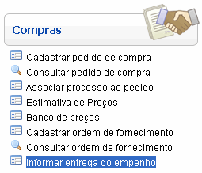

Informar Entrega do Empenho [ Voltar ]Utilize esta tela para cadastrar no sistema um empenho associado a uma ordem de fornecimento. O formulário "Informar entrega do empenho" encontra-se dentro do menu "Compras". 
Ao clicar no formulário, o sistema exibirá a seguinte tela:
Para registrar um empenho, siga os passos abaixo: 1º Passo: localize e selecione com um clique a ordem de fornecimento desejada. Utilize os filtros disponíveis para auxiliar a localização da ordem. Os filtros disponíveis são:
Após selecionar a ordem, a seguinte tela será aberta:
2° Passo: informe os detalhes do empenho. Os campos em amarelo são obrigatórios. 3° Passo: clique no botão |
 [Procurar] para selecioná-lo a
partir de uma listagem contendo todos os fornecedores cadastrados.
[Procurar] para selecioná-lo a
partir de uma listagem contendo todos os fornecedores cadastrados.  para salvar os dados
registrados.
para salvar os dados
registrados.